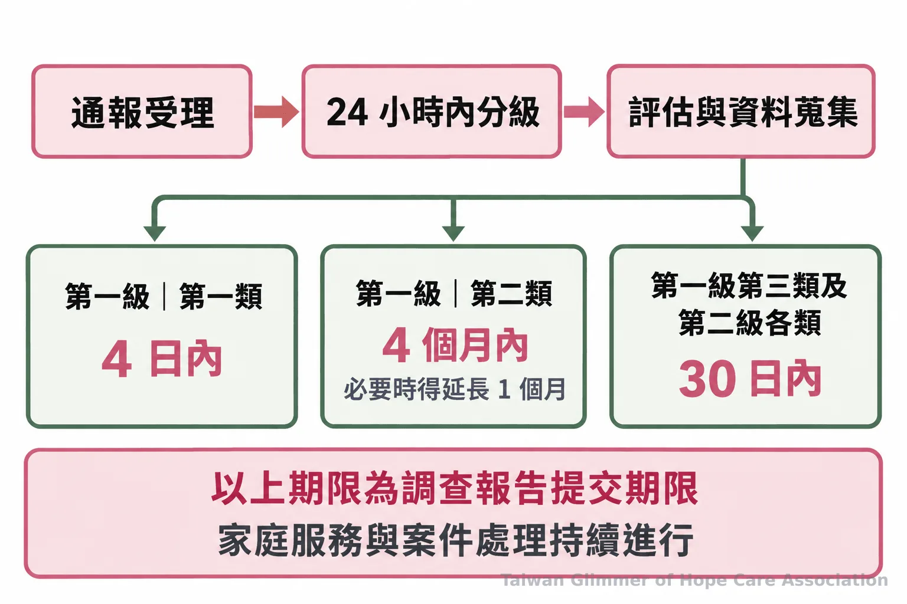

兒少保護通報流程怎麼走？113受理後的評估與家庭協助
打113後孩子會立刻被帶走嗎？了解兒少保護通報流程中的受理、分級、調查期限與家庭處遇，也整理通報者能做的事和求助管道。
脆弱家庭與社會安全網｜系列四之 2
「打了113，孩子會不會立刻被帶走？」許多人擔心通報會讓家庭立刻分開。兒少保護通報的作用，是把疑慮交給地方主管機關了解與評估；是否需要保護措施或安置，須依兒少安全、家庭狀況及法定程序判斷，不能只從「有人打了電話」推定結果。
一、通報是評估起點，處遇依安全需求決定
不會每案都直接安置。通報後由主管機關受理並評估，後續安排依個別情況決定。
《兒童及少年福利與權益保障法》規定，任何人發現兒少有法定情形，都可以向地方主管機關通報。通報者不必先自行認定是否成立兒虐，也不必蒐集完整證據；把親眼所見或已知的疑慮說清楚，讓專業人員接續了解即可。若評估發現有立即保護需要，主管機關依法採取適當措施；其他情況則依家庭需求安排後續服務。
二、113受理後，兒少保護通報流程如何分級？
113提供諮詢與通報服務，案件交由地方主管機關依程序處理；主管機關應在接獲通報後24小時內分級，再依案件資料分類。
分級主要看是否需要立即保護、安置或其他緊急處置；分類則會考量通報事由、相關人與兒少的關係、其他資訊及案件特性。這些判斷由主管機關進行，民眾不必替案件貼上分類。衛生福利部說明，113全年24小時受理保護諮詢與通報，也可透過簡訊或線上方式聯繫；通報者可提供人、事、時、地、物等資訊，並依保密原則處理個人資料。
《兒童及少年保護通報與分級分類處理及調查辦法》第五條規定，地方主管機關接獲通報後，應於二十四小時內進行分級。
三、社工會了解哪些事？調查期限有多久？
調查會了解兒少安全、照顧情況及相關事證；提出調查報告的期限依案件分級與分類而異。
了解情況時，社工可能透過訪視、聯繫及訪談等方式蒐集資訊，再綜合評估兒少目前的安全與需要。單一通報內容是評估線索之一，處理結果仍由主管機關依查得資訊與法定程序決定。
依現行辦法附表，第一級第一類案件應於4日內提出調查報告；第一級第二類為4個月內，必要時得延長1個月；第一級第三類及第二級各類為30日內。這些是提出調查報告的期限，不代表家庭服務或案件處理必定在同一時間結束。

四、評估後，家庭處遇可能有哪些安排？
後續服務會依兒少安全、照顧狀況和家庭需求安排，可能包括家庭處遇、福利資源轉介、保護措施或安置。
家庭處遇的目的在回應評估出的需求，實際服務內容因家庭狀況而異。需要保護時，主管機關會依法評估適當措施；若孩子能在原有照顧環境中維持安全，也可能以家庭支持或資源連結等方式協助。無論採取何種安排，都不能由通報本身推定，更不代表每個家庭都會走相同路徑。
五、旁人能做什麼，讓通報資訊更清楚？
記下具體觀察、發生時間與地點，依所知向113說明；若有立即人身安全危險，先撥110。
可以整理看到或聽到的事實、發生的大約時間、地點，以及目前是否有急迫危險。不確定的部分如實說明，不自行追問孩子、調查家庭或在社群張貼可辨識資訊。法律要求相關人員對通報人身分資料保密；但通報後是否回覆、如何聯繫，可能依案件與主管機關作業而異，可在聯繫113時詢問，不宜預期每案都有固定回報。
- 寫下親眼所見或已知資訊及時間，不加入推測。
- 有兒少安全疑慮，撥113諮詢或通報；專線全年24小時服務。
- 危險正在發生時，直接撥110。
- 兒少保護通報是主管機關展開評估的起點，並不等於孩子必然被安置。
- 接獲通報後24小時內分級；調查報告期限依案件類別而異。
- 提供具體資訊並保護兒少隱私；疑慮可聯繫113，立即危險請撥110。
常見問題
Q1：通報後會通知通報者嗎？
不一定有固定回覆方式，可在通報時留下合適的聯絡方式並詢問後續聯繫安排。
Q2：沒有完整證據可以通報嗎？
可以。描述已知的具體情況即可，不必自行蒐證或判定案件成立。
Q3：113什麼時候可以打？
有兒少保護疑慮時可撥打，113全年24小時提供諮詢與通報服務。
Q4：遇到立即危險應聯絡哪個單位？
若有立即人身安全危險，請先直接撥110。
Q5：家庭處遇代表孩子會離家嗎？
不代表。服務或保護安排由主管機關依兒少安全及個別需求評估。
若觀察到兒少可能受到傷害或疏忽，可先記下具體所見與時間，再聯繫113；有立即危險請撥110。制度流程之外，讀者也可至據點介紹認識微光的合作據點，或至活動紀錄了解協會活動。
參考資料
- 全國法規資料庫。《兒童及少年保護通報與分級分類處理及調查辦法》，第五至七條及調查報告期限附表。
- 全國法規資料庫。《兒童及少年福利與權益保障法》，第五十三條、第五十六條及第五十七條。
- 衛生福利部社會安全網。發現兒童少年有疑似遭受虐待或不當對待，應該怎麼協助他們？
- 衛生福利部保護服務司。113保護專線介紹
- 內政部警政署。110報案
本文同步刊於 appi.news。